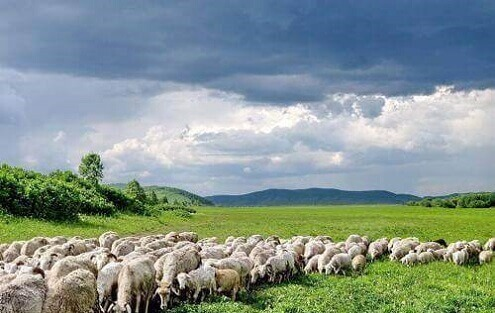
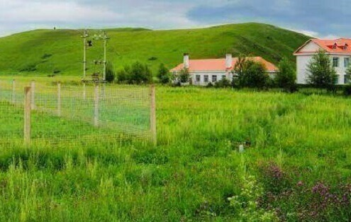
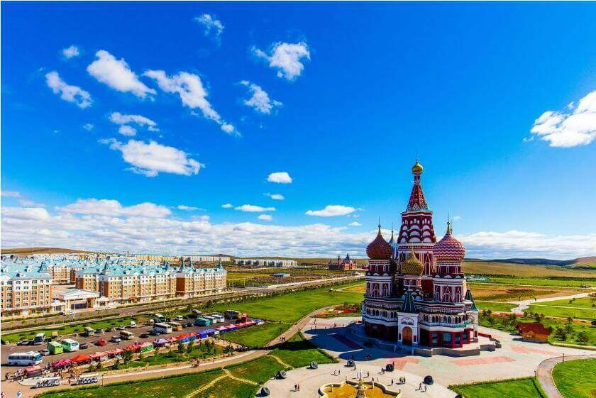

morly旅游圈
名胜古迹包括呼和浩特市的五塔寺、大召、昭君墓、席力图召、乌素图召、白塔，包头市的五当召、美岱召，伊金霍洛旗的成吉思汗陵园，阿拉善左旗的延福寺，赤峰市的辽上京、辽中京、大明塔，鄂伦春自治旗的嘎仙洞等。游客建议以下每一项你都该真情拥有：
1、草原盛会一那达幕：
即游艺、联欢的意思，多在草原8月份举行，源于七百年前。那达幕之日商贩云集，说书献艺应有尽有，主要传统运动项目有赛马、摔跤、射箭。
2、蒙古包：
蒙古包一词来自于满族人对蒙古族住所的称呼，是游牧生活的产物。是草原牧区传统居住用具，也是外地游人感兴趣的下榻场所。
3、祭敖包：
蒙古族传统宗教活动，敖包是在草原、山坡或沙丘高地上用石头、土块、柳条等垒筑而成的。“敖包”最早是在茫茫无边草原上建立起来的能识别方向、道路、边界的标志，后成为祭祀山神、路神的地方。 祭敖包多在7、8月份举行。祭祀时敖包上插树条，上面挂有五颜六色的布条或纸旗。在蒙古族人民心中，敖包是神圣的净地。
4、蒙古族人的传统食品分为白食和红食两种。
白食蒙古语叫查干伊德，是牛、马、羊、骆驼的奶制品。红食蒙古语叫乌兰伊德，即牛、羊等牲畜的肉制品。白食是蒙古族的敬客食品，按照蒙古族的习惯，白色表示纯洁、吉祥、崇高，因此白食是蒙古人待客的最高礼遇。5、蒙古族敬酒：
蒙古族斟酒敬客考究，酒是最能表达朋友之忠诚的珍贵食品。主人将酒斟在银碗或金杯中，托在哈达上，唱起祝酒歌，表达自己的真诚与感情，此时客人应随即接过酒，能饮则饮，不能饮则品尝少许，然后将酒归还主人，不可推让，谢绝主人的敬酒。6、蒙古族民间音乐有：
蒙古族四胡音乐、蒙古族马头琴音乐、蒙古族长调民歌、二人台牌子曲、潮尔道-蒙古族合声演唱。内容整理至网络，如有侵权，请联系我们！1255394075@qq.com
  